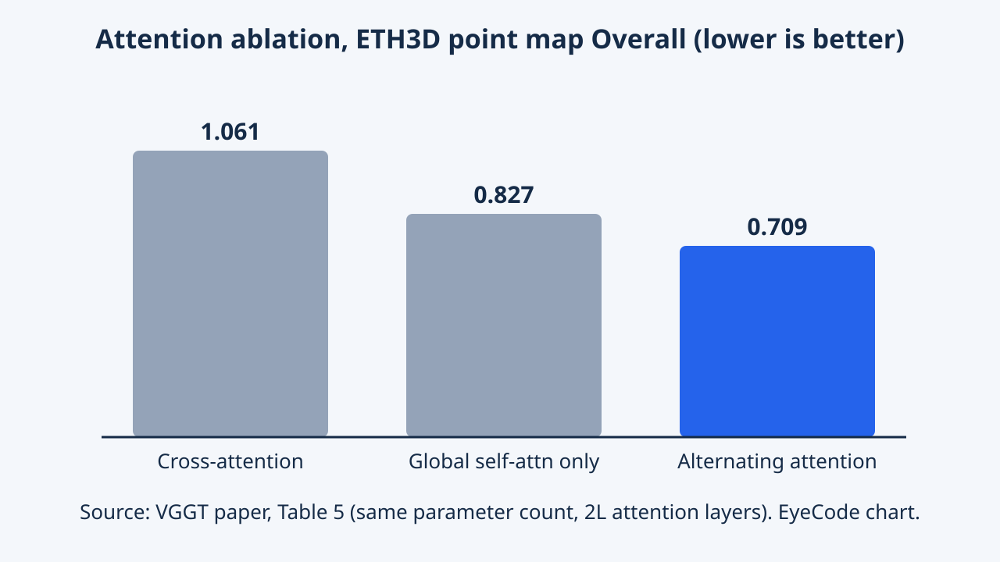
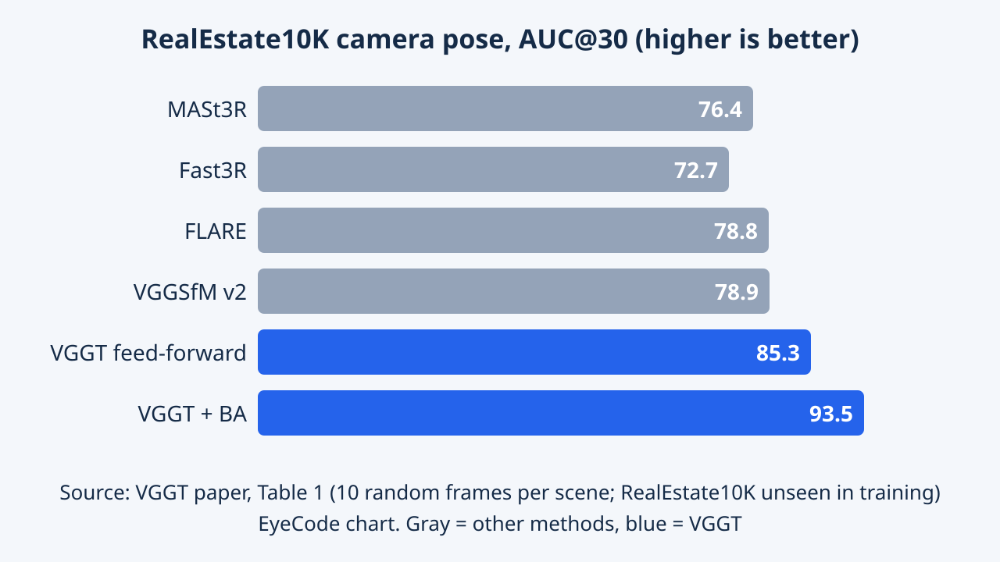

VGGT: Visual Geometry Grounded Transformer
Uses one feed-forward network to infer cameras, depth, point maps, and tracks from one or many images. The shared architecture studies jointly learned 3D geometry instead of separate task-specific solvers.
VGGT replaces a chain of iterative geometry steps with a single transformer for 3D reconstruction from images. This article covers the problem, the method, numbers checked against the paper and the limits the authors state.
Overview
VGGT is a neural network that looks at a few photos of the same scene and, in a single pass, says where each photo was taken from, how far away things are and where the 3D points lie. This used to need slow iterative algorithms that could break. CVPR 2025 lists the paper as a Best Paper on its official award page.
VGGT (Visual Geometry Grounded Transformer) is a feed-forward network that takes from one to hundreds of images of a scene and directly predicts camera parameters (intrinsics and extrinsics), depth maps, 3D point maps and point tracks. The authors report that it runs in under a second for small image sets and often beats optimization-based methods without post-processing. The authors are Jianyuan Wang, Minghao Chen, Nikita Karaev, Andrea Vedaldi, Christian Rupprecht and David Novotny (Visual Geometry Group, Oxford, and Meta AI).
Main contributions according to the paper: (1) one large transformer that predicts all key 3D quantities together; (2) outputs that are directly usable and often better than slower post-processed pipelines; (3) even better results when bundle adjustment (BA) is added on top; (4) a pretrained backbone that can be reused for dynamic point tracking and novel view synthesis. Being on the Best Paper list is official conference recognition; remarks about its significance are EyeCode editorial interpretation.
The paper proposes a transformer of about 1.2 billion parameters with very little 3D-specific inductive bias (only the alternation of frame-wise and global attention), trained multi-task on roughly 17 data sources with 3D annotations. One forward pass returns cameras, depth, point maps and dense tracking features for every frame. Two empirical claims: (i) the feed-forward output beats optimization-based and pairwise baselines such as DUSt3R and MASt3R on the reported benchmarks; (ii) adding BA improves accuracy further. The authors also position VGGT as a reusable backbone (dynamic tracking, novel view synthesis). The Best Paper listing is official recognition; other judgements here are editorial.
Research Problem
To rebuild a 3D scene from photos, people usually estimate camera positions, match points across images and refine everything again and again. It is slow and can break. The paper asks whether one large network can do it all in one step.
Classical structure-from-motion (SfM) has several stages: image matching, triangulation and bundle adjustment. Learning has improved individual parts, and VGGSfM combines learning with differentiable BA, but geometry still plays a big role, so systems stay complex and costly. DUSt3R and MASt3R predict point maps for an image pair, but they handle only two images at a time and need post-processing (global alignment) to fuse more.
Problem formulation: the input is N RGB images of the same scene (N from one to hundreds). For each image the network outputs a camera (9 numbers), a depth map, a point map in the first camera frame and a grid of features used for tracking. The first image is the reference frame; the order of the others is arbitrary. The difficulty is that the network must infer scene geometry and viewpoints at the same time, without being given the cameras.
A camera is a 9-dimensional vector: rotation quaternion (4), translation (3) and field of view (2), with the principal point fixed at the image center. A point map gives per-pixel 3D coordinates in the first camera frame, hence it is viewpoint-invariant. The architecture is permutation-equivariant for all frames except the first. The outputs are redundant: cameras can be inferred from the point map (for example by PnP), and depth from point map plus cameras; the authors still train on all of them because it improves accuracy (Sec. 4.5). Unlike DUSt3R, predictions are not normalized at inference: the ground truth is divided by the mean distance of 3D points to the origin, and the network must learn that scale from data.
Key Idea
Rather than designing many intricate geometry steps, the authors use a fairly ordinary transformer, let the images "look at each other" and teach it with lots of data. The network alternates: sometimes it studies each image alone, sometimes all images together. Think of studying each photo for details, then spreading them all on a table to compare, over and over.
The core idea is a large, nearly standard transformer with one structural choice: alternating attention (AA), which switches between self-attention within each frame and global self-attention over the tokens of all frames. The model learns several related 3D quantities together (camera, depth, point map, track) on many public datasets. The authors report that joint learning improves accuracy, and that at inference, point maps built from predicted depth plus cameras beat the dedicated point-map head.
AA balances integrating information across images with normalizing activations inside each image. In the ablation (Table 5, ETH3D, same parameter count with 2L attention layers) point-map Overall error is 0.709 with AA, 0.827 with global self-attention only and 1.061 with cross-attention; the authors also write that other exploratory experiments found cross-attention generally worse than pure self-attention. Table 6: dropping the camera loss raises Overall to 0.834, the track loss to 0.790 and the depth loss to 0.727, so the camera loss contributes most and depth only a little. Keep in mind this is a single-benchmark ablation (ETH3D, 10 frames per scene).
Methodology


Each image is cut into small patches (tokens). The network processes the tokens of all images through many attention blocks. At the end there are three outputs: one for cameras, one for depth and 3D points, and one for tracking points across images.
Pipeline: (1) each image is split into 14x14 patches and turned into tokens by DINOv2; (2) every frame gets a camera token and four register tokens, with a different learned set for the first frame to mark the reference; (3) 24 blocks, each with a frame-wise attention layer and a global attention layer; (4) a camera head (four self-attention layers and a linear layer) predicts cameras, a DPT head predicts depth, point maps and uncertainty, and a tracking head based on CoTracker2 predicts where a query point appears in other images.
Training data comes from about 17 sources (Co3Dv2, BlendMVS, DL3DV, MegaDepth, Kubric, WildRGB, ScanNet, HyperSim, Mapillary, Habitat, Replica, MVS-Synth, PointOdyssey, Virtual KITTI, two Aria datasets and a synthetic set of artist-made assets). The total loss is camera plus depth plus point map plus 0.05 times the track loss.
Every attention layer has width 1024 and 16 heads (following ViT-L in DINOv2), with QKNorm and LayerScale initialized at 0.01; about 1.2 billion parameters in total. Features from blocks 4, 11, 17 and 23 feed the DPT. The camera loss is Huber. The depth loss follows DUSt3R: residuals weighted by a predicted aleatoric uncertainty map, plus a gradient-matching term and a log-uncertainty term; the point-map loss is analogous. The track loss is the distance to the ground-truth correspondence, plus a BCE visibility term as in CoTracker2. In symbols: $\mathcal{L}=\mathcal{L}_{camera}+\mathcal{L}_{depth}+\mathcal{L}_{pmap}+0.05\,\mathcal{L}_{track}$.
Training: AdamW, 160K iterations, peak learning rate 0.0002 with cosine decay and 8K warmup; each batch has 48 frames from one random scene with 2 to 24 frames per scene; longest side 518 px, aspect ratio randomized between 0.33 and 1.0, short side cropped to 168-518 px, per-frame color augmentation, gradient clipping at 1.0, bfloat16 and gradient checkpointing; 64 A100 GPUs for nine days. The BA variant initializes from predicted depth and point maps, removing the triangulation step of VGGSfM. Differentiable BA during training would make each step roughly 4 times slower (per the arXiv v1 HTML), so the authors left it out.
Experiments & Results
| Method | Re10K AUC@30 | CO3Dv2 AUC@30 | Time |
|---|---|---|---|
| DUSt3R | 67.7 | 76.7 | ~7 s |
| MASt3R | 76.4 | 81.8 | ~9 s |
| VGGSfM v2 | 78.9 | 83.4 | ~10 s |
| MV-DUSt3R ‡ | 71.3 | 69.5 | ~0.6 s |
| CUT3R ‡ | 75.3 | 82.8 | ~0.6 s |
| FLARE ‡ | 78.8 | 83.3 | ~0.5 s |
| Fast3R ‡ | 72.7 | 82.5 | ~0.2 s |
| VGGT (feed-forward) | 85.3 | 88.2 | ~0.2 s |
| VGGT (with BA) | 93.5 | 91.8 | ~1.8 s |
| Method | GT camera | Acc. | Comp. | Overall |
|---|---|---|---|---|
| PatchmatchNet | yes | 0.427 | 0.377 | 0.417 |
| MASt3R | yes | 0.403 | 0.344 | 0.374 |
| GeoMVSNet | yes | 0.331 | 0.259 | 0.295 |
| DUSt3R | no | 2.677 | 0.805 | 1.741 |
| VGGT | no | 0.389 | 0.374 | 0.382 |
| Method | TTO | AUC@3° | AUC@5° | AUC@10° | Runtime |
|---|---|---|---|---|---|
| PixSfM (SP + SG) | yes | 45.19 | 57.22 | 70.47 | >20 s |
| DFSfM (LoFTR) | yes | 46.55 | 58.74 | 72.19 | >10 s |
| DUSt3R | yes | 13.46 | 21.24 | 35.62 | ~7 s |
| MASt3R | yes | 30.25 | 46.79 | 57.42 | ~9 s |
| VGGSfM | yes | 45.23 | 58.89 | 73.92 | ~6 s |
| VGGSfMv2 | yes | 59.32 | 67.78 | 76.82 | ~10 s |
| VGGT | no | 39.23 | 52.74 | 71.26 | 0.2 s |
| VGGT + BA | yes | 66.37 | 75.16 | 84.91 | 1.8 s |

On several tests VGGT estimates camera positions more accurately than earlier methods while being much faster, around 0.2 seconds. Adding a BA refinement step improves results further. See the tables below for details.
Protocol: camera pose is measured with AUC@30 (area under the angular-accuracy curve combining rotation and translation errors) on RealEstate10K and CO3Dv2, using 10 random frames per scene. The model was not trained on RealEstate10K. Baselines include DUSt3R, MASt3R, VGGSfM v2 and concurrent works (MV-DUSt3R, CUT3R, FLARE, Fast3R). Table 1 shows feed-forward VGGT at 85.3 and 88.2, and 93.5 and 91.8 with BA. The authors note that the gap is larger on RealEstate10K, and that BA still brings gains, so room for improvement remains.
Other results: on DTU, the Overall error drops from 1.741 (DUSt3R) to 0.382 without ground-truth cameras. On ETH3D (10 frames, Umeyama alignment), Overall is 0.709 with the point head and 0.677 when built from depth plus camera, versus 0.826 for MASt3R and 1.005 for DUSt3R. For two-view matching on ScanNet-1500, AUC@5 is 33.9 versus 31.8 for Roma. For dynamic tracking, plugging VGGT features into CoTracker raises AJ on Kinetics from 49.6 to 57.2. On speed, Table 9 reports 0.14 seconds for 10 frames and 1.04 seconds for 50 frames on one H100.
Qualitatively, the paper shows an oil painting, two non-overlapping images and a repeated-texture scene where DUSt3R is distorted or fails; these are examples chosen by the authors.
IMC (Table 10, Appendix C): feed-forward VGGT reaches AUC@10 of 71.26, below VGGSfMv2 (76.82) but much faster (0.2 versus about 10 seconds); at the tight AUC@3 threshold it scores 39.23 versus 59.32. With BA it reaches 66.37 and 84.91. Note that the authors use the same MegaDepth split as DUSt3R/MASt3R for this comparison and exclude the relevant ScanNet scenes from training when evaluating ScanNet-1500. On DTU, MASt3R and GeoMVSNet use ground-truth cameras (Overall 0.374 and 0.295), whereas VGGT and DUSt3R do not.
Novel view synthesis (Table 7, GSO): VGGT-NVS uses 4 input views and no input cameras, and gets PSNR 30.41, SSIM 0.949, LPIPS 0.033, versus LVSM at 31.71 / 0.957 / 0.027 (input cameras known, trained on Objaverse); VGGT-NVS uses an internal dataset about 20% the size of Objaverse and 224 px images instead of 256, so this is not a like-for-like comparison. Tracking (Table 8): VGGT features replace the CoTracker2 backbone and the whole tracker is fine-tuned on Kubric; Kinetics AJ is 57.2 versus 49.6, RGB-S 72.1 versus 67.4 and DAVIS 64.7 versus 61.8. This measures VGGT features as a backbone, not the VGGT tracking head alone.
Memory and time (Table 9, H100, 336x518 images, backbone only): 1 frame 0.04 s / 1.88 GB; 100 frames 3.12 s / 21.15 GB; 200 frames 8.75 s / 40.63 GB. The camera head accounts for about 5% of runtime and 2% of memory of the backbone; a DPT head uses on average 0.03 s and 0.2 GB per frame. On design choices, the authors write that DINOv2 patchifying beats a 14x14 convolution with more stable training and that normalizing predictions is unnecessary, but the text gives no numbers for either claim.
Limitations
The model does not yet handle fisheye or panoramic photos well, nor very strong camera rotation, nor scenes that deform a lot such as moving cloth. Running with very many images also uses a lot of memory.
Reported by the authors
The Discussions section states that the current model does not support fisheye or panoramic images, that quality drops under extreme input rotations, and that the model tolerates slight non-rigid motion but fails under substantial non-rigid deformation. The authors say these can be addressed by fine-tuning on targeted data with minimal architectural change. They also acknowledge that naive global self-attention is memory-intensive with many tokens and suggest LLM-style techniques such as tensor parallelism (as in Fast3R).
EyeCode analysis (editorial interpretation)
Peak memory of 40.63 GB at 200 frames shows a practical limit for very large image sets. At tight angular thresholds on IMC the feed-forward model trails the BA variant, so BA still has a place when high accuracy is needed.
Reported by the authors
The three limits above (fisheye/panorama, extreme rotation, large non-rigid deformation) are the whole list in the Discussions section; the authors say fine-tuning can address them. They acknowledge the memory cost of global attention and note that the DPT heads predict each frame independently, so users short of memory can run frame by frame. They also state that differentiable BA looks promising but was left out because of training cost.
EyeCode analysis (editorial interpretation)
Some caveats when reading the results. On IMC the feed-forward model trails VGGSfMv2 (AUC@3 of 39.23 versus 59.32; AUC@10 of 71.26 versus 76.82), so a broad claim of beating everything needs the evaluation conditions attached. Some comparisons are not like-for-like (DTU rivals use ground-truth cameras; NVS uses less data than LVSM). Training needs large 3D-annotated data and heavy compute (64 A100s for nine days), so full reproduction is costly. The main tables report no ablation over the number of input frames.
Key Takeaways
One direct network pass can replace several slow geometry steps if it is trained on enough data. It still has limits on unusual images and strongly deforming scenes.
- One feed-forward network predicts cameras, depth, point maps and tracks in a single pass.
- Alternating attention and multi-task learning are the two design choices backed by ablations (Tables 5 and 6).
- AUC@30 of 85.3 on RealEstate10K and 88.2 on CO3Dv2 in about 0.2 seconds; with BA, 93.5 and 91.8.
- BA still adds accuracy, especially at tight angular thresholds.
- Limits: fisheye, panoramas, extreme rotation, large non-rigid deformation and memory.
Suggested directions (EyeCode suggestions, not claims from the paper)
- Try VGGT plus a light BA on your own data and compare against COLMAP in time and error.
- A low-inductive-bias architecture plus diverse data and many supervision signals can compete with classical geometric pipelines.
- Redundant outputs (depth, camera, point map) help in training, and combining depth with cameras at inference beats the point-map head.
- When judging the results, note the conditions: in Table 1 Fast3R runs in about 0.2 s while CUT3R and FLARE take about 0.5-0.6 s, so the edge is mainly accuracy rather than speed.
- NVS and tracking results fine-tune VGGT as a backbone; they are not outputs of the original model alone.
Suggested directions (EyeCode suggestions, not claims from the paper)
- Memory-efficient attention or parallelism to scale to thousands of images.
- Fine-tuning for distorted cameras or dynamic scenes as the authors suggest, starting with a small pilot test.